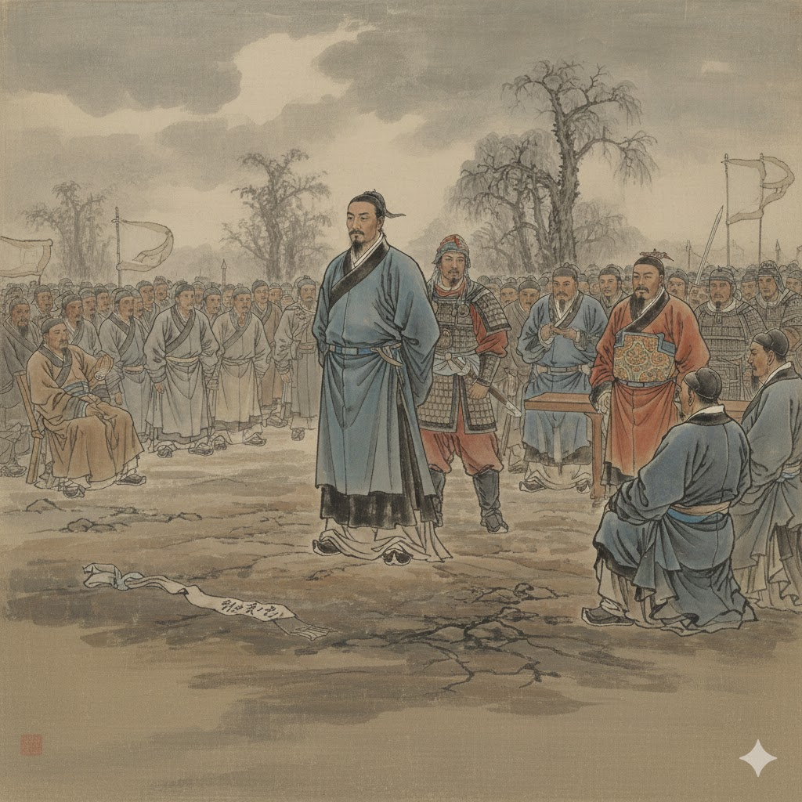

 《 衣 yī ㄧ 帶 dài ㄉㄞ˪ 贊 zàn ㄗㄢ˪ 》 孔 kǒng ㄎㆲˋ 曰 wát ㄨㄚㆵ˙ 成 síng ㄒㄧㄥˊ 仁 zzín ㆢㄧㄣˊ ， 孟 bbîng ㆠㄧㄥ˫ 曰 wát ㄨㄚㆵ˙ 取 cǔ ㄘㄨˋ 義 ggî ㆣㄧ˫ ， 惟 wí ㄨㄧˊ 其 gí ㄍㄧˊ 義 ggî ㆣㄧ˫ 盡 zîn ㄐㄧㄣ˫ ， 所 sǒo ㄙㆦˋ 以 yǐ ㄧˋ 仁 zzín ㆢㄧㄣˊ 至 zì ㄐㄧ˪ 。 讀 tók ㄊㆦㆻ˙ 聖 sìng ㄒㄧㄥ˪ 賢 hián ㄏㄧㄢˊ 書 sū ㄙㄨ ， 所 sǒo ㄙㆦˋ 學 hák ㄏㄚㆻ˙ 何 hó ㄏㄜˊ 事 sû ㄙㄨ˫ ？ 而 zzí ㆢㄧˊ 今 gīm ㄍㄧㆬ 而 zzí ㆢㄧˊ 後 hôo ㄏㆦ˫ ， 庶 sù ㄙㄨ˪ 幾 gī ㄍㄧ 無 bbú ㆠㄨˊ 愧 kùi ㄎㄨㄧ˪ ！